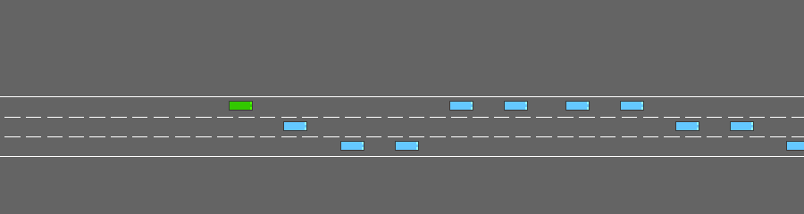
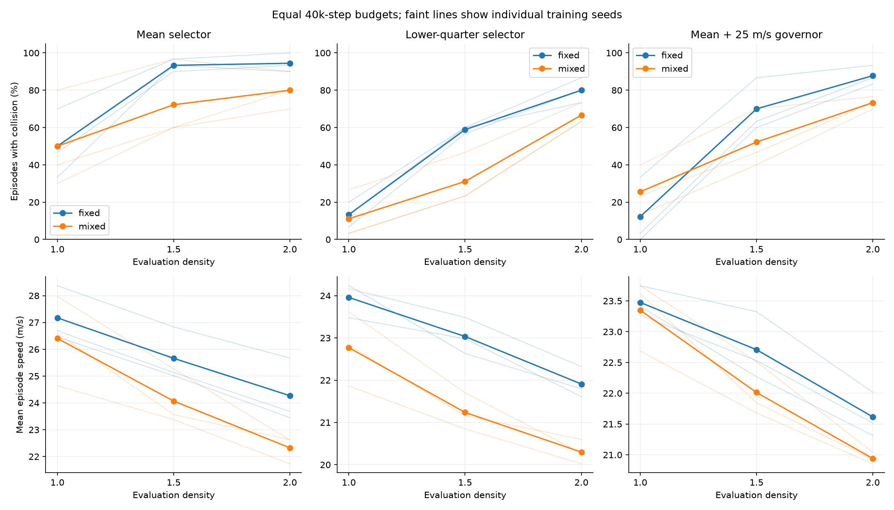
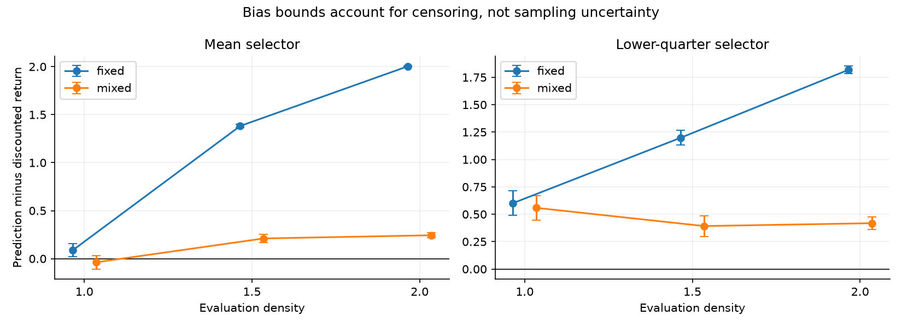
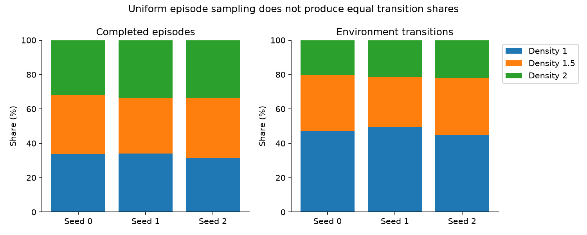

Fixed-density training

DISTRIBUTIONAL RL / TRAFFIC COVERAGE
QR-DQN trained at density 1 versus a per-episode mixture of densities 1, 1.5 and 2. Each setting has three training seeds and 40,000 interactions per model. Rewards, architecture, optimizer and exploration schedule remain fixed.
Training-budget comparison · Interactive risk frontier and recorded driving · Complete numerical results · Recorded experiment design
At density 2, the lower-quarter selector's mixed-minus-fixed collision difference is -13.3 percentage points; exploratory 95% interval [-26.7, +0.0].
Negative differences favor mixture training. The selectors and 25 m/s governor are unchanged. This is a development comparison with only three training seeds; all confirmation scenarios remain reserved.
At density 1.5, cautious-selector collisions change from 58.9% to 31.1%, while speed changes from 23.03 to 21.24 m/s.
The normal-traffic governor result worsens: 12.2% to 25.6% collisions. Broader training is not an improvement for every deployment rule.
Fewer observed collisions come with slower driving. The same-network governor comparisons retain residual speed differences, and uncertainty intervals remain exploratory. This study isolates coverage within QR-DQN; it does not compare DQN and QR-DQN under identical randomized training.
Same evaluation scenario block for both training settings (10000–10029). Densities 1.5 and 2 were absent from fixed-density training and are included in mixed training. Faint curves show seed variation.

| Training | Selector | Density | Collisions | Speed m/s | Distance m | Worst 10% return |
|---|---|---|---|---|---|---|
| fixed | Mean selector | 1.0 | 50.0% | 27.17 | 584 | 0.23 |
| fixed | Mean selector | 1.5 | 93.3% | 25.66 | 234 | -1.24 |
| fixed | Mean selector | 2.0 | 94.4% | 24.27 | 176 | -1.77 |
| fixed | Lower-quarter selector | 1.0 | 13.3% | 23.96 | 648 | 0.18 |
| fixed | Lower-quarter selector | 1.5 | 58.9% | 23.03 | 406 | -1.55 |
| fixed | Lower-quarter selector | 2.0 | 80.0% | 21.91 | 251 | -1.93 |
| fixed | Mean + 25 m/s governor | 1.0 | 12.2% | 23.47 | 662 | 0.66 |
| fixed | Mean + 25 m/s governor | 1.5 | 70.0% | 22.71 | 374 | -1.55 |
| fixed | Mean + 25 m/s governor | 2.0 | 87.8% | 21.62 | 230 | -1.79 |
| mixed | Mean selector | 1.0 | 50.0% | 26.41 | 556 | -0.15 |
| mixed | Mean selector | 1.5 | 72.2% | 24.07 | 326 | -1.74 |
| mixed | Mean selector | 2.0 | 80.0% | 22.32 | 257 | -1.86 |
| mixed | Lower-quarter selector | 1.0 | 11.1% | 22.77 | 631 | 0.13 |
| mixed | Lower-quarter selector | 1.5 | 31.1% | 21.24 | 509 | -1.86 |
| mixed | Lower-quarter selector | 2.0 | 66.7% | 20.30 | 306 | -1.97 |
| mixed | Mean + 25 m/s governor | 1.0 | 25.6% | 23.35 | 609 | -0.36 |
| mixed | Mean + 25 m/s governor | 1.5 | 52.2% | 22.01 | 447 | -1.78 |
| mixed | Mean + 25 m/s governor | 2.0 | 73.3% | 20.94 | 301 | -1.86 |
Densities 1.25 and 2.5 use a separate development scenario block, 16000–16029. Density 1.25 is an intermediate value absent from the sampled mixture; density 2.5 is beyond both training ranges. These rows use different scenarios from the covered-settings table.
| Training | Selector | Density | Collisions | Speed m/s | Distance m | Worst 10% return |
|---|---|---|---|---|---|---|
| fixed | Mean selector | 1.25 | 62.2% | 27.37 | 504 | -0.18 |
| fixed | Mean selector | 2.5 | 98.9% | 24.09 | 114 | -1.85 |
| fixed | Lower-quarter selector | 1.25 | 22.2% | 23.51 | 617 | -0.59 |
| fixed | Lower-quarter selector | 2.5 | 93.3% | 22.30 | 146 | -1.95 |
| fixed | Mean + 25 m/s governor | 1.25 | 15.6% | 23.51 | 664 | 0.52 |
| fixed | Mean + 25 m/s governor | 2.5 | 92.2% | 21.58 | 154 | -1.85 |
| mixed | Mean selector | 1.25 | 55.6% | 25.29 | 506 | -0.59 |
| mixed | Mean selector | 2.5 | 91.1% | 22.25 | 156 | -1.90 |
| mixed | Lower-quarter selector | 1.25 | 15.6% | 22.06 | 604 | -0.70 |
| mixed | Lower-quarter selector | 2.5 | 84.4% | 20.68 | 198 | -1.95 |
| mixed | Mean + 25 m/s governor | 1.25 | 20.0% | 23.01 | 631 | -0.89 |
| mixed | Mean + 25 m/s governor | 2.5 | 87.8% | 20.79 | 180 | -1.90 |
Exploratory intervals use 5,000 crossed bootstrap replicates over training seed IDs and shared scenarios, preserving policy pairing. Matching seed IDs shares initialization and exploration streams, but not the simulated trajectories. Three seeds and repeated development evaluation limit inference.
| Block | Selector | Density | Change pp | Exploratory interval pp | Per-seed changes pp | Speed change m/s |
|---|---|---|---|---|---|---|
| main | Mean selector | 1.0 | +0.0 | [-40.0, 35.6] | [33.3, 6.7, -40.0] | -0.77 |
| main | Mean selector | 1.5 | -21.1 | [-46.7, 6.7] | [6.7, -33.3, -36.7] | -1.59 |
| main | Mean selector | 2.0 | -14.4 | [-33.3, 0.0] | [-3.3, -10.0, -30.0] | -1.94 |
| main | Lower-quarter selector | 1.0 | -2.2 | [-20.0, 16.7] | [13.3, -3.3, -16.7] | -1.19 |
| main | Lower-quarter selector | 1.5 | -27.8 | [-46.7, -6.7] | [-13.3, -33.3, -36.7] | -1.80 |
| main | Lower-quarter selector | 2.0 | -13.3 | [-26.7, 0.0] | [-13.3, -16.7, -10.0] | -1.61 |
| main | Mean + 25 m/s governor | 1.0 | +13.3 | [-17.8, 43.3] | [40.0, 20.0, -20.0] | -0.13 |
| main | Mean + 25 m/s governor | 1.5 | -17.8 | [-47.8, 13.3] | [10.0, -16.7, -46.7] | -0.70 |
| main | Mean + 25 m/s governor | 2.0 | -14.4 | [-30.0, 2.2] | [-6.7, -13.3, -23.3] | -0.68 |
| transfer | Mean selector | 1.25 | -6.7 | [-40.0, 30.0] | [30.0, -13.3, -36.7] | -2.09 |
| transfer | Mean selector | 2.5 | -7.8 | [-20.0, 1.1] | [0.0, -10.0, -13.3] | -1.84 |
| transfer | Lower-quarter selector | 1.25 | -6.7 | [-22.2, 11.1] | [6.7, -13.3, -13.3] | -1.45 |
| transfer | Lower-quarter selector | 2.5 | -8.9 | [-20.0, 0.0] | [-6.7, -6.7, -13.3] | -1.62 |
| transfer | Mean + 25 m/s governor | 1.25 | +4.4 | [-13.3, 23.3] | [20.0, 3.3, -10.0] | -0.50 |
| transfer | Mean + 25 m/s governor | 2.5 | -4.4 | [-18.9, 6.7] | [6.7, -6.7, -13.3] | -0.80 |
Lower quarter minus the mean selector with the fixed 25 m/s governor, within the same networks. The governor threshold is not reselected for mixed training; check residual speed differences.
| Block | Training | Density | Collision change pp | Exploratory interval pp | Speed change m/s |
|---|---|---|---|---|---|
| main | fixed | 1.0 | +1.1 | [-16.7, 16.7] | +0.48 |
| main | fixed | 1.5 | -11.1 | [-30.0, 7.8] | +0.33 |
| main | fixed | 2.0 | -7.8 | [-24.4, 7.8] | +0.29 |
| main | mixed | 1.0 | -14.4 | [-28.9, -1.1] | -0.58 |
| main | mixed | 1.5 | -21.1 | [-35.6, -6.7] | -0.78 |
| main | mixed | 2.0 | -6.7 | [-18.9, 6.7] | -0.64 |
| transfer | fixed | 1.25 | +6.7 | [-13.3, 23.3] | +0.00 |
| transfer | fixed | 2.5 | +1.1 | [-6.7, 10.0] | +0.72 |
| transfer | mixed | 1.25 | -4.4 | [-18.9, 10.0] | -0.95 |
| transfer | mixed | 2.5 | -3.3 | [-12.2, 5.6] | -0.11 |
Same separate calibration scenarios (12000–12059) for both settings. The 30-step time cutoff right-censors continuing returns. Bounds retain surviving episodes; they are not statistical confidence intervals. Lower-quarter deployment changes the continuation policy relative to training.

| Training | Selector | Density | Bias bounds | Compatibility gap | Adjacent crossings |
|---|---|---|---|---|---|
| fixed | mean | 1.0 | [0.019, 0.154] | 0.189 | 6.1% |
| fixed | mean | 1.5 | [1.366, 1.398] | 0.374 | 5.1% |
| fixed | mean | 2.0 | [2.001, 2.007] | 0.470 | 3.6% |
| fixed | tail25 | 1.0 | [0.49, 0.713] | 0.197 | 7.3% |
| fixed | tail25 | 1.5 | [1.13, 1.266] | 0.397 | 6.0% |
| fixed | tail25 | 2.0 | [1.782, 1.853] | 0.454 | 4.3% |
| mixed | mean | 1.0 | [-0.108, 0.032] | 0.170 | 7.7% |
| mixed | mean | 1.5 | [0.167, 0.254] | 0.146 | 3.5% |
| mixed | mean | 2.0 | [0.219, 0.269] | 0.198 | 2.2% |
| mixed | tail25 | 1.0 | [0.447, 0.669] | 0.236 | 12.3% |
| mixed | tail25 | 1.5 | [0.298, 0.486] | 0.213 | 5.5% |
| mixed | tail25 | 2.0 | [0.363, 0.473] | 0.183 | 3.8% |
Both lower-quarter policies use training seed 0, scenario seed 10000, density 2. The scenario was fixed before inspecting the new outcomes and is illustrative rather than a performance estimate.

Density is sampled uniformly at episode reset with a separate seeded generator. Short dense-traffic episodes contribute fewer transitions. The density label is not added to the observation; the network still receives the same 40 inputs. Equal step budgets therefore do not imply equal episode counts or equal data by density.

python run_density_coverage.py --jobs 3 validates and reuses saved artifacts. --stage evaluate skips training; --stage report rebuilds the viewer. Run python -m pytest -q for checks.
Only traffic density changes during training. The simulator retains simplified vehicle interactions; the observation is partial. Quantile forecasts are not collision probabilities, and cautious deployment has no guaranteed safety or global CVaR optimality. Results concern sampled development scenarios and should not be presented as real-road validation.